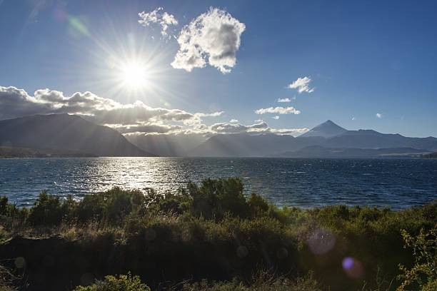
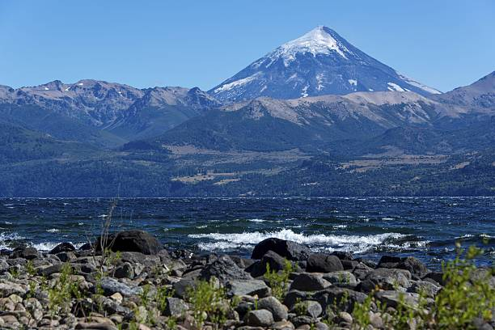
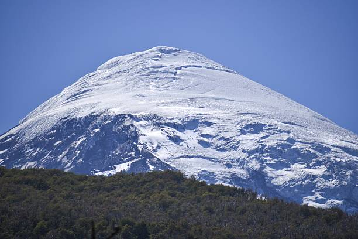
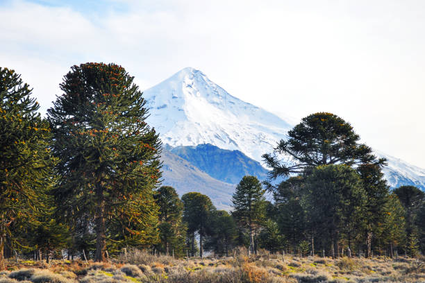

Flora y fauna
El Parque Nacional Lanín conserva una gran variedad de ambientes: bosques andino‑patagónicos, lagos y altas cumbres. Aquí mostramos una selección fotográfica representativa de su paisaje y especies.

Bosques andino‑patagónicos

Lagos y ríos

Cumbres y nieves

Atardeceres y miradores